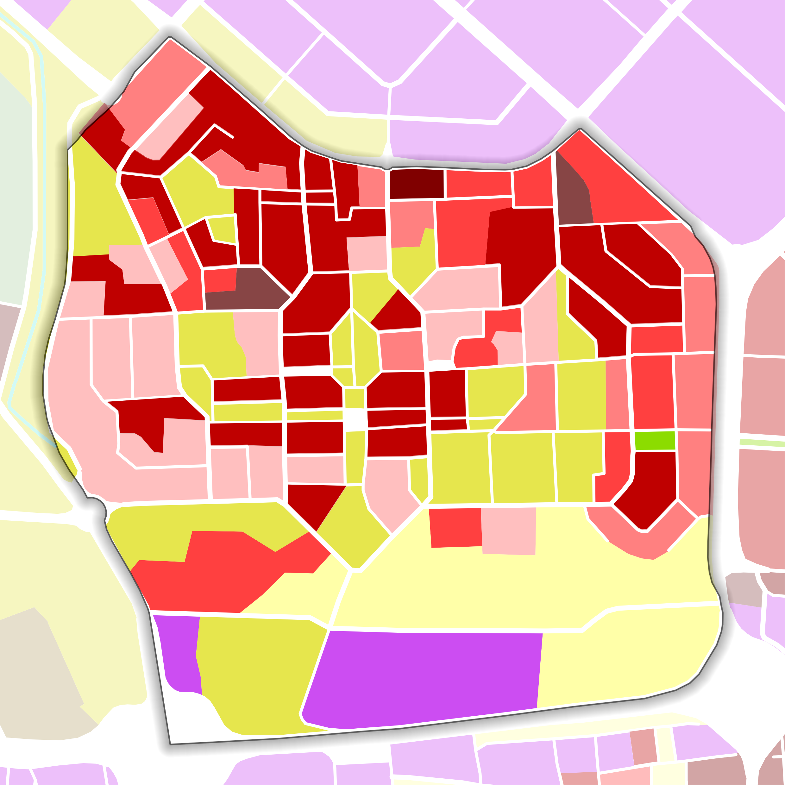
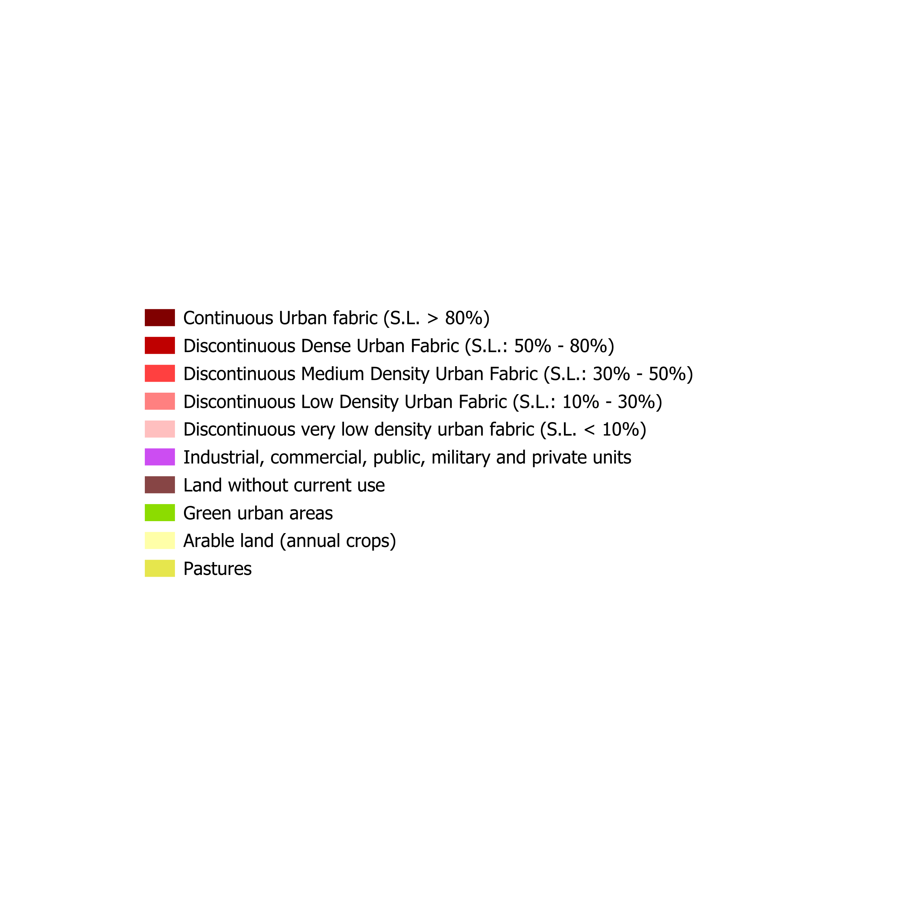
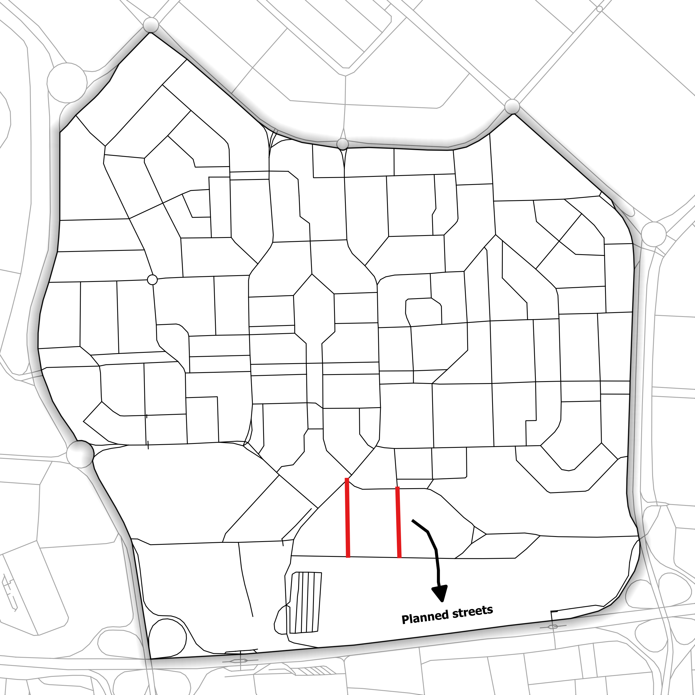
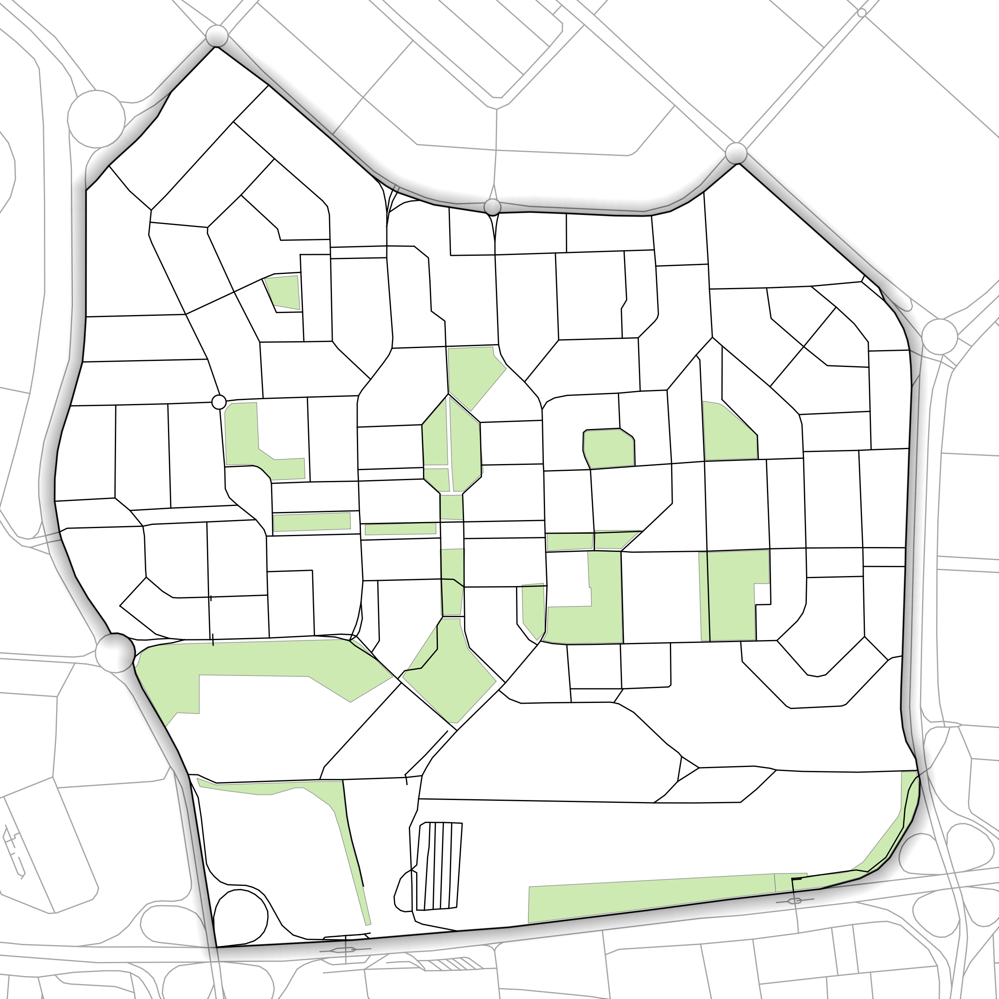
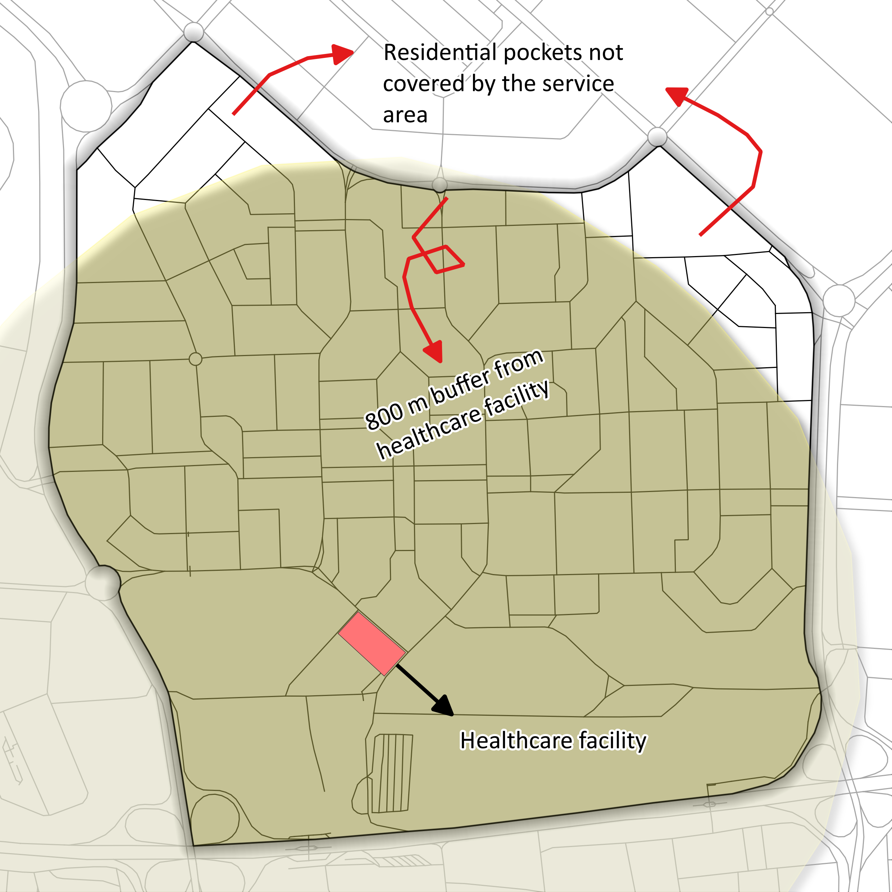
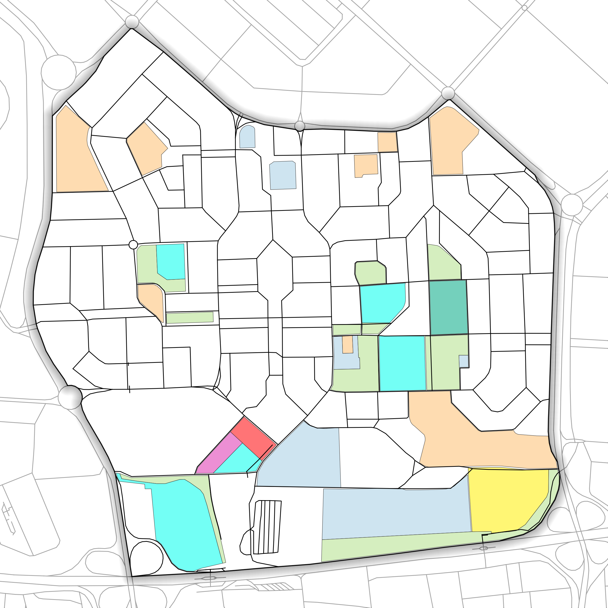
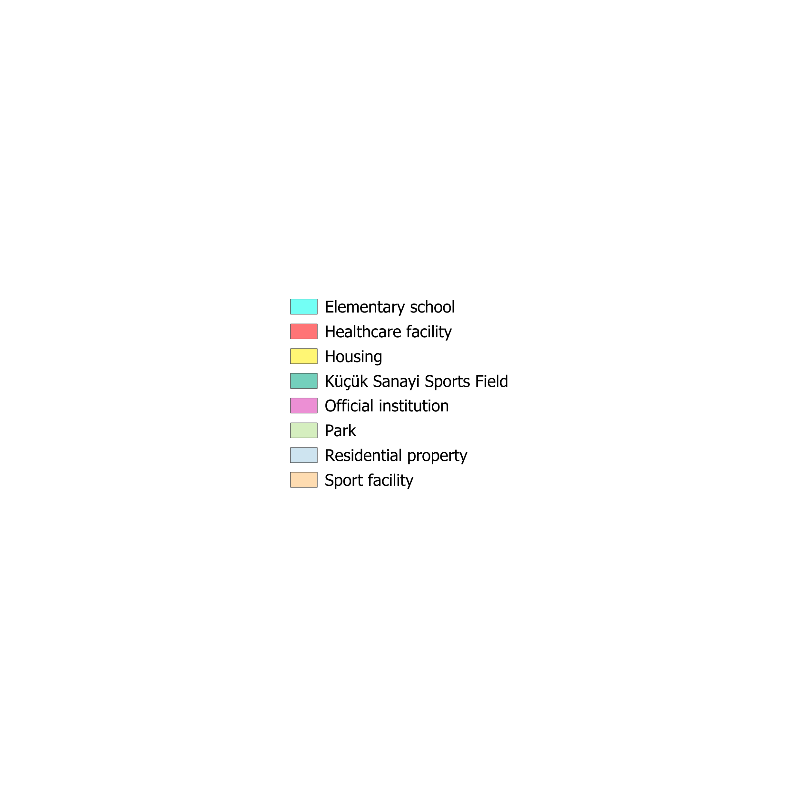

Land-use Analysis and Planning in 23 Nisan
Abstract
This study evaluates the land-use structure, accessibility, and ecological provision of the 23 Nisan Neighborhood at the neighborhood scale. Spatial analysis of existing and planned land use is combined with an 800 m service-area accessibility assessment and green-space accounting against regulatory standards. The neighborhood demonstrates a balanced planning structure: residential density (21.36% discontinuous urban fabric) is supported by a sufficient mix of public services and open space, and green-space provision (12.57 m²/person) exceeds the regulatory minimum. The principal deficiency is healthcare accessibility, which covers only 89.30% of the area. Targeted intervention in healthcare access would elevate the plan from compliant to fully inclusive.

1. Planning Overview
23 Nisan Neighborhood demonstrates a balanced planning structure, where residential density is supported by a sufficient mix of public services and open space. While the area remains moderately dense (21.36% discontinuous urban fabric), the presence of schools, health facilities, and sports infrastructure reflects a deliberate effort to sustain livability at the neighborhood scale.


2. Accessibility Structure
Accessibility analysis reveals a highly effective service distribution. Within an 800 m radius, primary schools, parks, and sports facilities achieve near-universal coverage (~100%), indicating that key daily needs are spatially well-integrated into the neighborhood fabric.
The service-area coverage for each facility type is computed as the share of neighborhood area (or population) falling within the 800 m walkable catchment of that service:
where $A_{\text{served},\,i}$ is the area within the 800 m service radius of facility type $i$, and $A_{\text{total}}$ is the total neighborhood area.

3. Green Space Performance
The plan performs strongly in ecological provision, delivering 12.57 m² of green space per capita, exceeding regulatory standards. With 10.18% of total area allocated to green space, the neighborhood secures both environmental quality and recreational capacity, which is an essential counterbalance to its residential density.
Green space per capita and green-space ratio are defined as:
where $A_{\text{green}}$ is the total green-space area, $P$ is the resident population, and $A_{\text{total}}$ is the total neighborhood area.

4. Critical Gap: Healthcare Access
A notable exception lies in healthcare accessibility, which covers only 89.30% of the area, leaving gaps in the northwest and northeast. Addressing this through additional service points or improved connectivity will be crucial to achieving full inclusivity.

5. Planned Land Use


6. Key Metrics
| Indicator | Value | Interpretation |
|---|---|---|
| Total area | 1,429,200.68 m² | Neighborhood scale |
| Population | 11,577 | Moderate density |
| Urban fabric (21.36%) | 269,100.12 m² | Moderately dense |
| Green space | 145,554 m² | Strong ecological provision |
| Green space per capita | 12.57 m²/person | Above standard (10 m²) |
| Green space ratio | 10.18% | Above minimum threshold (8.10%) |
7. Conclusion
Overall, 23 Nisan represents a well-performing, evidence-based neighborhood model, where density, accessibility, and ecological provision are largely in equilibrium. Targeted improvements in healthcare access could elevate it from a compliant plan to a truly inclusive and resilient urban environment.
From compliant to truly inclusive: closing the healthcare-access gap is the one move that completes the plan.